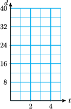
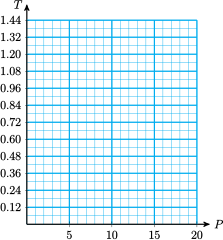

A ratio is a type of quotient used to compare two numerical quantities.
Section 3.2 Ratio and Proportion
¶Subsection Ratios
For example, suppose the ratio of pupils to computers at a local elementary school is 10 to 3. This means that for every 10 pupils in the school there are 3 computers. We often display a ratio as a fraction, like this:
\begin{equation*}
\dfrac{\text{Number of pupils}}{\text{Number of computers}}=\dfrac{10}{3}
\end{equation*}
Caution 3.4.
This ratio does not mean that there are exactly 10 pupils and 3 computers at the school. There could be 40 pupils and 12 computers or 200 pupils and 60 computers (or many other combinations) because
\begin{equation*}
\dfrac{40}{12}=\dfrac{200}{60}=\dfrac{10}{3}
\end{equation*}
Example 3.5.
In a survey of 100 of his classmates, Greg found that 68 students supported a strict gun control law, while 32 students did not. What is the ratio of survey respondents who support gun control to those opposed?
Solution
The ratio of those supporting gun control to those opposed is 68 to 32, or \(\dfrac{68}{32}\text{.}\) This ratio reduces to \(\dfrac{17}{8}\text{,}\) or 17 to 8.
Caution 3.6.
When we write a ratio, it is important to notice which number is the numerator, and which is the denominator. When we write "the ratio of \(a\) to \(b\)" as a fraction, \(a\) is the numerator and \(b\) is the denominator.
In Example 1, we could also compute the ratio of opponents to supporters of the gun control law. In that case, the answer would be \(\dfrac{32}{68}\) or \(\dfrac{8}{17}\text{,}\) the reciprocal of the answer to Example 1.
Ratio.
A ratio is a type of quotient used to compare two numerical quantities. The ratio of \(a\) to \(b\) is written \(\dfrac{a}{b}\text{.}\)
Look Closer.
A ratio can be expressed as a decimal instead of a common fraction. Because \(\dfrac{17}{8}\) is equal to 2.125, we can write the ratio in Example 1 as 2.125 to 1. We usually express a ratio as a decimal fraction if the numbers being compared are decimal numbers.
Example 3.7.
A small circuit board measures 4.2 centimeters long by 2.4 centimeters wide. What is the ratio of its length to its width?
Solution
The ratio of length to width is \(\dfrac{4.2~ \text{cm}}{2.4~ \text{cm}}\text{,}\) or 1.75, as you can verify with your calculator. (Can you express this ratio as a common fraction?)
Subsubsection Reading Questions
1.
What is a ratio?
Answer
A type of quotient comparing two quantities
2.
When do we express a ratio as a decimal fraction?
Answer
When the numbers being compared are decimal numbers
Subsection Rates
A rate is a ratio that compares two quantities with different units.
You are already familiar with many rates. If you say that your average speed was 50 miles per hour, or that apples cost 89 cents per pound, you are using rates. Because per usually indicates division,
\begin{gather*}
\text{50 miles per hour}~~~~~~\text{means}~~~~~~\dfrac{50~ \text{miles}}{1~ \text{hour}}\\
\text{89 cents per pound}~~~~~~\text{means}~~~~~~\dfrac{89~ \text{cents}}{1~ \text{pound}}
\end{gather*}
Example 3.8.
Sarah traveled 390 miles on 15 gallons of gas. Express her rate of fuel consumption as a ratio, and then as a rate.
Solution
As a ratio, Sarah's rate of fuel consumption was \(\dfrac{390~ \text{miles}}{15~ \text{gallons}}\text{.}\) We simplify by dividing the denominator into the numerator, to get \(\dfrac{26~ \text{miles}}{1~ \text{gallon}}\text{,}\) or 26 miles per gallon.
Subsection Proportions
A proportion is a statement that two ratios are equal.
Thus, a proportion is an equation in which both sides are ratios. Here are some proportions:
\begin{equation*}
\dfrac{6}{9}=\dfrac{8}{12}~~~~~~\text{and}~~~~~~\dfrac{3.2}{8}=\dfrac{1}{2.5}
\end{equation*}
A proportion may involve variables. How can we solve a proportion such as this one?
\begin{equation*}
\dfrac{7}{5}=\dfrac{x}{6}
\end{equation*}
Because \(x\) is divided by 6, we could multiply both sides of the equation by 6 to clear the fraction. But we can clear both fractions at the same time if we multiply by the LCD (Lowest Common Denominator) of the two fractions. In this case, the LCD is \(5 \cdot 6 = 30\text{.}\) Multiplying both sides by 30 gives us
\begin{equation*}
\begin{aligned}
\blert{30}\left(\dfrac{7}{5}\right) \amp =\left(\dfrac{x}{6}\right)\blert{30}\\
42 \amp = 5x
\end{aligned}
\end{equation*}
Now we can divide both sides by 5 to get the answer,
\begin{equation*}
x=\dfrac{42}{5}=8.4
\end{equation*}
Look Ahead.
There is a short-cut we can use that avoids calculating an LCD. We can obtain the equation \(42=5x\) by cross-multiplying:
Property of Proportions.
We can clear the fractions from a proportion by cross-multiplying.
\begin{equation*}
\text{If}~~\dfrac{a}{b}=\dfrac{c}{d},~~~\text{then}~~~ad=bc.
\end{equation*}
Example 3.9.
Solve \(~~\dfrac{2.4}{1.5}=\dfrac{8.4}{x}\)
Solution
We apply the property of proportions and cross-multiply to get
\begin{equation*}
\begin{aligned}
2.4x \amp = 1.5(8.4) \amp \amp \blert{\text{Divide both sides by 2.4.}}\\
x \amp = \dfrac{1.5(8.4)}{2.4} \amp \amp \blert{\text{Simplify the right side.}}\\
x \amp = 5.25
\end{aligned}
\end{equation*}
We can check the solution by substituting \(x=2.5\) into the original proportion.
Caution 3.10.
Cross-mutiplying works only for solving proportions! Do not try to use cross-multiplying on other types of equations, or for other operations on fractions. In particular, do not use cross-multiplying when multiplying fractions or adding fractions.
Subsubsection Reading Questions
3.
What is a rate?
Answer
A ratio that compares quantities with different units
4.
What is a proportion?
Answer
A statement that two ratios are equal
5.
What is the short-cut for solving a proportion called?
Answer
Cross-multiplying
Subsection Proportional Variables
Suppose that grape juice costs 80 cents per quart, and complete the table.
| Number of Quarts | Total Price (cents) | \(\dfrac{\text{Total Price}}{\text{Number of Quarts}}\) |
| \(1\) | \(80\) | \(\dfrac{80}{1}=80\) |
| \(2\) | \(160\) | \(\dfrac{160}{2}=\) |
| \(3\) | \(240\) | \(\hphantom{0000}\) |
| \(4\) | \(320\) | \(\hphantom{0000}\) |
Did you find that the ratio \(\dfrac{\text{total price}}{\text{number of quarts}}\text{,}\) or price per quart, is the same for each row of the table? This agrees with common sense: The price per quart of grape juice is the same no matter how many quarts you buy.
Two variables are proportional if their ratio is always the same.
Example 3.11.
One quart of grape juice costs 80 cents. The price of grape juice is proportional to the number of quarts you buy. How much grape juice can you buy for $10.00?
Solution
Let \(x\) represent the number of quarts you can buy for $10.00, or 1000 cents. Because the variables total price and number of quarts are proportional, we know that their ratio is constant. Thus, the ratio
\begin{gather*}
\dfrac{\text{1000 cents}}{x~\text{quarts}}~~~~~~\text{is equal to the ratio}~~~~~~\dfrac{\text{80 cents}}{\text{1 quart}}\\
\dfrac{1000}{x}=\dfrac{80}{1}
\end{gather*}
We solve the proportion by cross-multiplying to get
\begin{equation*}
\begin{aligned}
1000(1) \amp = 80x \amp \amp \blert{\text{Divide both sides by 80.}}\\
x \amp = \dfrac{1000}{80}=12.5
\end{aligned}
\end{equation*}
You can buy 12.5 quarts of grape juice for $10.00. (Or, if you can only buy quart bottles, then you can buy 12 quarts and have 40 cents left over.)
Caution 3.12.
When writing a proportion, we must be careful that both ratios have the same units in their numerators, and the same units in their denominators. In the example above, it would not be correct to equate \(\dfrac{1000}{x}\) and \(\dfrac{1}{80}\text{,}\) because the ratios do not have the same units.
For the grape juice example, the ratio \(\dfrac{\text{total price}}{\text{number of quarts}}\) was always equal to 80. The number 80 is called the constant of proportionality.
Look Closer.
If we let \(P\) stand for the price of the grape juice and \(q\) stand for the number of quarts purchased, we have the equation
\begin{equation*}
\begin{aligned}
\dfrac{P}{q} \amp = 80\\
\text{or}~~~~P \amp = 80q
\end{aligned}
\end{equation*}
The graph of this equation is a straight line that passes through the origin, as shown below.
Proportional Variables.
If two variables are proportional, they are related by the equation
\begin{equation*}
y=kx
\end{equation*}
where \(k\) is the constant of proportionality.
Subsubsection Reading Questions
6.
What are proportional variables?
Answer
Variables whose ratio is always the same
7.
If and are proportional, what equation do they satisfy?
Answer
\(y=kx\)
Subsection Skills Warm-Up
¶Subsubsection Exercises
Convert each common fraction to a decimal, and each decimal to a common fraction.
1.
\(\dfrac{3}{8}\)2.
\(\dfrac{7}{5}\)3.
\(\dfrac{4}{3}\)4.
\(\dfrac{5}{12}\)5.
\(0.04\)6.
\(0.\overline{6}\)7.
\(1.875\)8.
\(2.2\)Subsubsection Answers to Skills Warm-Up
Subsubsection Exercises
Subsection Homework 3.2
For Problems 1–4, write ratios or rates.
1.
In a survey of 300 employees at a large company, 125 used public transportation to commute to work. What is the ratio of employees who use public transportation to those who do not?
2.
Erica tutored in the math lab for 6.5 hours last week and made $56.68. What is Erica's rate of pay in dollars per hour?
3.
The instructions for mixing a rose fertilizer call for \(\dfrac{3}{4}\) cup of potash and \(1\dfrac{3}{8}\) cups of nitrogen. What is the ratio of nitrogen to potash?
4.
An orange contains 0.14 milligram of thiamin and 0.6 milligram of niacin. What is the ratio of niacin to thiamin?
5.
Which of the following expressions are proportions?
- \(\dfrac{3}{x}=\dfrac{8}{15}\)
- \(\dfrac{v}{9}-\dfrac{12}{5}\)
- \(\dfrac{w}{6}+\dfrac{2}{5}=\dfrac{3}{2}\)
- \(\dfrac{2.6}{m}=\dfrac{m}{1.6}\)
For Problems 6–9, solve the proportion.
6.
\(\dfrac{x}{16}=\dfrac{9}{24}\)7.
\(\dfrac{182}{65}=\dfrac{21}{w}\)8.
\(\dfrac{7}{b}=\dfrac{5}{9}\)9.
\(\dfrac{7/3}{3}=\dfrac{z}{9/2}\)For Problems 10–12, decide whether the two variables are proportional.
10.
| Time | Distance |
| 1 | 45 |
| 2 | 90 |
| 4 | 180 |
| 5 | 225 |
11.
| Length | Area |
| 3 | 9 |
| 4 | 16 |
| 8 | 64 |
| 10 | 100 |
12.
| Rate | Time |
| 20 | 40 |
| 40 | 20 |
| 50 | 16 |
| 80 | 10 |
For Problems 13–16, decide whether the two quantities are proportional.
13.
A 9-inch pizza costs $6, and a 12-inch pizza costs $10.
14.
A commuter train travels 10 miles in 20 minutes, and 15 miles in 30 minutes.
15.
It takes \(4\dfrac{1}{2}\) cups of flour to make two loaves of bread, and 18 cups to make eight loaves.
16.
An 18-foot sailboat sleeps four, and a 32-foot sailboat sleeps six.
For Problems 17–22,
- Write a proportion.
- Solve the proportion and answer the question.
17.
If 3 pounds of coffee makes 225 cups, how many pounds of coffee is needed to make 3000 cups of coffee?
18.
Gunther's car uses 32 liters of gas to travel 184 kilometers. How many liters will he need to travel 575 kilometers?
19.
On a map of Fairfield County, centimeter represents a distance of 10 kilometers. If Eastlake and Kenwood are 6 centimeters apart on the map, what is the actual distance between the two towns?
20.
In a survey of 1200 voters, 863 favored the construction of a light rail system. If 8000 people vote, about how many will vote for the light rail system?
21.
If 1 inch equals 2.54 centimeters, what is the length in inches of a wire 35 centimeters long?
22.
A cinnamon bread recipe calls for 1tablespoons of cinnamon and 5 cups of flour. How much cinnamon would be needed with 8 cups of flour?
For Problems 23–24,
- Find the constant of proportionality and write an equation relating the variables.
- Make a table of values and graph the equation.
- Use your equation to answer the question.
23.
Megan's wages, \(w\text{,}\) are proportional to the time, \(h\text{,}\) she works. Megan made $60 for 8 hours work as a lab assistant. How long will it take her to make $500?
| \(h\) | \(w\) |
| \(\hphantom{0000}\) | \(\hphantom{0000}\) |
| \(\hphantom{0000}\) | \(\hphantom{0000}\) |
| \(\hphantom{0000}\) | \(\hphantom{0000}\) |
24.
The amount of pure copper, \(c\text{,}\) produced by Copperfield Mine is proportional to the amount of ore extracted, \(g\text{.}\) A new lode produced 24 grams of copper from 800 grams of ore. How many grams of copper will one kilogram of ore yield?
| \(g\) | \(c\) |
| \(\hphantom{0000}\) | \(\hphantom{0000}\) |
| \(\hphantom{0000}\) | \(\hphantom{0000}\) |
| \(\hphantom{0000}\) | \(\hphantom{0000}\) |
25.
Trish's real-estate commission is proportional to the amount of the sale. She made $3200 commission on a sale of $80,000.
- Write an equation relating Trish's sales and her commission.
- What would her commission be on the sale of a $200,000 property?
26.
Everett can bicycle 16 miles in 2 hours and 24 miles in 3 hours. The distance \(d\) that Everett travels is proportional to the time \(t\) that he bicycles.
- Write an equation for \(d\) in terms of \(t\text{.}\)
- Graph your equation. 
- Complete the tables, and use them to answer the question below. What happens to the distance Everett travels when he doubles the time he bicycles?
\(t\) \(d\) \(2\) \(\hphantom{0000}\) \(3\) \(\hphantom{0000}\) \(5\) \(\hphantom{0000}\) \(t\) \(d\) \(4\) \(\hphantom{0000}\) \(6\) \(\hphantom{0000}\) \(10\) \(\hphantom{0000}\)
27.
The sales tax on $12 is 72 cents, and the sales tax on $15 is 90 cents. The tax \(T\) is proportional to the price \(P\text{.}\)
- Write an equation for \(T\) in terms of \(P\text{.}\)
- Graph your equation. 
- Complete the tables, and use them to answer the question below. What happens to the sales tax when the price is cut in half?
\(P\) \(T\) \(12\) \(\hphantom{0000}\) \(20\) \(\hphantom{0000}\) \(30\) \(\hphantom{0000}\) \(P\) \(T\) \(6\) \(\hphantom{0000}\) \(10\) \(\hphantom{0000}\) \(15\) \(\hphantom{0000}\)
28.
The cost of tuition at Walden College is given by the formula \(T=500+40u\text{,}\) where \(u\) is the number of units you take.
- Fill in the tables.
Units Tuition \(3\) \(\hphantom{0000}\) \(5\) \(\hphantom{0000}\) \(8\) \(\hphantom{0000}\) Units Tuition \(6\) \(\hphantom{0000}\) \(10\) \(\hphantom{0000}\) \(16\) \(\hphantom{0000}\) - Does doubling the number of units you take double your tuition?
- Is \(T\) proportional to \(u\text{?}\)
29.
- State a formula for the circumference of a circle in terms of its radius.
- Complete the table.
\(r\) \(2\) \(5\) \(7\) \(10\) \(C\) \(\hphantom{0000}\) \(\hphantom{0000}\) \(\hphantom{0000}\) \(\hphantom{0000}\) - Graph your equation, using the values in your table.
- Is the circumference of a circle proportional to its radius?
30.
- State a formula for the area of a square in terms of the length of its side.
- Complete the table.
\(s\) \(2\) \(5\) \(6\) \(8\) \(A\) \(\hphantom{0000}\) \(\hphantom{0000}\) \(\hphantom{0000}\) \(\hphantom{0000}\) - Graph your equation, using the values in your table.
- Is the area of a square proportional to the length of its side?
30.
The following recipe for Cadet Mess Sloppy Joes comes from the West Point Officers Wives' Club Cookbook.
For 1000 servings:
| 310 lb. ground beef | \(\hphantom{0000}\) | 2 cans diced red peppers |
| 100 lb. ground turkey | \(\hphantom{0000}\) | 20 lb. onions, sliced |
| \(5\dfrac{1}{2}\) cans mushrooms | \(\hphantom{0000}\) | 3 lb. chili powder |
| 4 lb. green peppers, sliced | \(\hphantom{0000}\) | 1 lb. garlic powder |
| 18 cans tomato puree | \(\hphantom{0000}\) | \(3\dfrac{1}{2}\) pounds sugar |
| 12 cans tomato catsup | \(\hphantom{0000}\) | 1 qt. light flavor glow |
| 1 qt cider vinegar | \(\hphantom{0000}\) | 28 oz. salt and pepper |
- What is the ratio of tomato puree to tomato catsup? How many servings of sloppy joes can you make if you have only 5 cans of tomato catsup? How many cans of tomato puree will you need?
- How much chili powder (in ounces) will you need to serve sloppy joes to 50 people? How many pounds of ground beef?
- The cookbook also lists the ingredients needed for 4500 servings. How many cans of mushrooms are required for 4500 servings? How many pounds of onions?